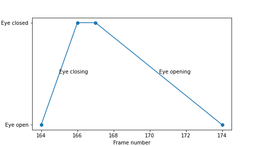
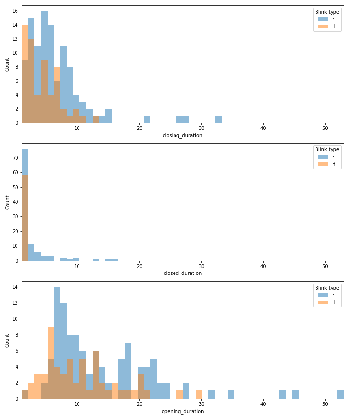
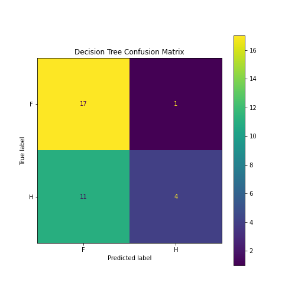
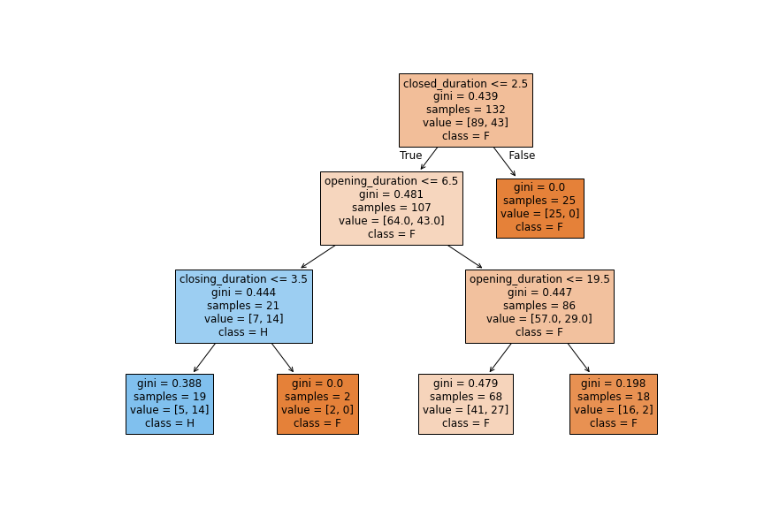
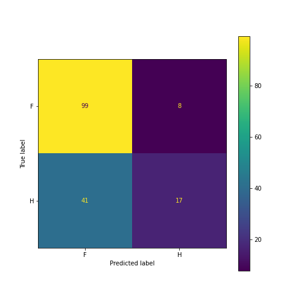

Worked Example
Last updated on 2026-05-15 | Edit this page
Estimated time: 70 minutes
Overview
Questions
- What can a typical machine learning project look like from start to finish?
- How could I approach solving a problem with machine learning in Python?
Objectives
- Understand the core structure and key the stages of a machine learning project.
- Work through a complete example, from importing data to evaluation of results.
- As we work through this example, think about what each stage might look like for your own problem.
Time to dive right in
We are going to jump straight into the deep end, but don’t stress. The aim of this session is to step through a worked example. Do not worry if you do not understand everything right away; that is completely normal. This first run-through is designed to give you a high-level sense of how all the pieces fit together.
Throughout the week, we will return to each stage of this process in more detail, so that by the end of the programme you should have a much clearer and richer understanding of what each section is doing. As you work through this example, try to think about how some of these steps might apply to your own data or problem.
Scenario: Blink and you’ll miss it

A researcher studying horse behaviour is interested in whether blink patterns could provide a useful indicator of stress. Her hypothesis is that a higher ratio of half blinks to full blinks may be associated with a more stressed individual.
However, classifying a blink as a half blink or a full blink requires expertise, and there may be some disagreement between annotators. It is a significant bottle-neck in the process, however identifying when the blink occurs, although still time-consuming, is a simpler task that requires less specialist judgement. Therefore, the researcher wants to explore whether simple measurements taken from blink timings could help distinguish between the two blink types.
To investigate this, her PhD student has manually annotated 23 videos and produced a tabular dataset of horse blink events.

For each blink, they recorded every:
- frame where the eye started closing
- frame where the eye returned to fully open
- and if the blink was a half blink or a full blink
For some of the blinks they recorded:
- the frame where the eye was fully closed
- the frame where the eye started opening
The researcher now wants to know whether these timing measurements can be used to train a model to classify blink type.
How do we turn this scenario into a worked example?

First, we need to clarify the problem:
- Output: blink type, either half blink or full blink
- Input: features created from the blink timing measurements
- Aim: reduce/replace the need for expert manual classification
Based on this, we could start with the following problem definition:
This is a useful starting point, but possibly not precise enough.
For example, what do we mean by:
- accurately?
- What specific duration features will we use?
- How good does the model need to be before it is useful? Does it need to match the level of agreement we would expect between two human annotators?
These questions matter because a good problem definition helps us decide what data we need, what features to create, which model to train, and how to evaluate whether the model is useful. Without a clear problem definition, it is easy to drift away from the actual question we are trying to answer.
For example, if we want a model that performs similarly to human annotators, our problem definition might become:
This is now more precise, but it also reveals a gap in our data. To know whether the model performs comparably to human annotators, we would need the same blink events labelled by more than one person. Without multiple human annotations, we cannot estimate how much disagreement normally occurs between annotators.
It might not always be possible to collect the extra data, therefore we will proceed and treat this worked example as a proof-of-concept study. The aim is not to build a final model, but to test whether simple blink duration features contain enough information to distinguish between half and full blinks before we commit to additional data collection.
Your task
We will use this scenario to walk through the typical stages of a machine learning project. Now that we have defined the problem, here are the next steps on our journey:
- Import and Explore the data: Load the horse blink dataset into our environment and better understand its structure, look for patterns, and identify any missing or unusual values.
- Preprocess the data: Engineer blink duration features from the dataset, and prepare the data for modelling.
- Select models: Use a simple baseline model and then try a more advanced model.
- Train and test: First use a simple train/test split to understand the basic workflow, then use leave-one-out cross-validation.
- Evaluate results: Measure how well the models classify half and full blinks, and think carefully about what conclusions we can make.
Import Libraries
If you attended the Python introduction session, hopefully some of this code should look familiar. We’ll start by importing the libraries we need and then loading our dataset so we can begin exploring it.
PYTHON
# Import the libraries we need for this worked example
import glob
import matplotlib.pyplot as plt
import numpy as np
import pandas as pd
from sklearn.ensemble import RandomForestClassifier
from sklearn.metrics import ConfusionMatrixDisplay, accuracy_score
from sklearn.model_selection import LeaveOneOut, cross_val_predict, train_test_split
from sklearn.tree import DecisionTreeClassifier, plot_treeImport the data
Next we want to import all the csvs into our Python session. The ouput will show which files have been found and the number of files found.
PYTHON
# Find all CSV files in the 'ground_truth' folder
file_list = sorted(glob.glob("data/ground_truth/*.csv"))
# Print each file name so we can check what has been found
for file_name in file_list:
print(file_name)OUTPUT
data/ground_truth\G-002.csv
data/ground_truth\G-003.csv
data/ground_truth\G-004.csv
data/ground_truth\G-005.csv
data/ground_truth\M-001.csv
data/ground_truth\M-002.csv
data/ground_truth\M-003.csv
data/ground_truth\M-004.csv
data/ground_truth\M-005.csv
data/ground_truth\M-006.csv
data/ground_truth\M-007.csv
data/ground_truth\M-008.csv
data/ground_truth\P-001.csv
data/ground_truth\P-002.csv
data/ground_truth\P-003.csv
data/ground_truth\P-004.csv
data/ground_truth\P-005.csv
data/ground_truth\P-006.csv
data/ground_truth\P-007.csv
data/ground_truth\Y-001.csv
data/ground_truth\Y-002.csv
data/ground_truth\Y-003.csv
data/ground_truth\Y-004.csvOUTPUT
Number of files: 23Data wrangling
We have multiple files, so how should we organise them? We could inspect them separately, or consider different subsets (e.g., by horse, by date, etc.), but for now we will combine them into a single pandas dataframe and display the total length. The aim here is to get the data into a ‘usable’ shape, and that is highly dependent on what you are trying to achieve.
PYTHON
# Create a list to hold the DataFrame from each file
dataframes = []
# Read each CSV file and add its DataFrame to the list
for file_name in file_list:
temp_df = pd.read_csv(file_name)
dataframes.append(temp_df)
# Combine all DataFrames into one larger DataFrame
df_blinks = pd.concat(dataframes, ignore_index=True)
# Print the total length
print("Number of events in dataframe:", len(df_blinks.index))OUTPUT
Number of events in dataframe: 612
Inspect the Data
Before doing anything else, we want to understand what our data looks like. We’ll start by inspecting the first 10 rows, the column names, and checking the shape of the table to see how many rows (events) and how many columns (features) it contains.
OUTPUT
Combined dataset shape:
(612, 5)OUTPUT
Column names:
['Eye_starts_closing', 'Eye_closed', 'Eye_starts_opening', 'Eye_open', 'Blink_type']OUTPUT
First 10 rows:
Eye_starts_closing Eye_closed Eye_starts_opening Eye_open Blink_type
0 164 166.0 167.0 174 F
1 189 191.0 192.0 197 F
2 528 530.0 531.0 538 H
3 25 NaN NaN 29 H
4 163 NaN NaN 170 F
5 174 NaN NaN 180 F
6 247 NaN NaN 254 F
7 271 NaN NaN 277 H
8 318 NaN NaN 327 F
9 333 NaN NaN 343 HThe printed output shows us how many rows and columns are present in the combined dataset. The dataset contains the expected features describing a blink event, such as when the eye starts to close and when the eye opens again. We can see that there are some missing values (NaN) in the dataset.
Dealing with missing values
To check whether missing values are likely to be a problem, we can count how many appear in each column.
PYTHON
# Count how many missing values there are in each column
# isna() marks missing values as True
# sum() then counts how many True values appear in each column
missing_values = df_blinks.isna().sum()
print(missing_values)OUTPUT
Eye_starts_closing 0
Eye_closed 447
Eye_starts_opening 423
Eye_open 0
Blink_type 0
dtype: int64There are a large number of missing values that appear in the Eye_closed and Eye_starts_opening columns, which are required to calculate eye closing, eye closed, and eye opening durations.
Pre-processing
To keep things simple, we’ll remove any rows that contain missing values. This is a convenient teaching choice, but it comes at a cost. After cleaning, we keep only 165 of the original 612 blink events. That means we are now modelling a much smaller subset of the data. Later in the week, we will look at more ways to handle missing values.
PYTHON
# Remove rows with missing values and make a copy of the cleaned result
df_blinks_c = df_blinks.dropna().copy()
# Reset the index so the cleaned DataFrame has a simple continuous row number
df_blinks_c = df_blinks_c.reset_index(drop=True)
# Check the shape after cleaning
print("Post-cleaning shape:", df_blinks_c.shape)OUTPUT
Post-cleaning shape: (165, 5)Visualise a blink
We can take a single blink event and look at what features we could extract.
PYTHON
# Take the first event and drop the blink type label
blink_event = df_blinks_c.iloc[0, :-1]
# Plot the blink event against the known state (0 is open 1 is closed)
plt.figure(figsize = (7,4))
plt.plot(blink_event, [0, 1, 1, 0], marker="o")
# Label and show the plot
plt.yticks([0, 1], ["Eye open", "Eye closed"]);
plt.xlabel("Frame number")
plt.ylabel("Eye state")
plt.text((blink_event.iloc[0] + blink_event.iloc[1]) / 2, .5, "Eye closing")
plt.text((blink_event.iloc[2] + blink_event.iloc[3]) / 2, .5, "Eye opening")
plt.show()
Feature Engineering
Now let’s go ahead and create our measures. From this data we can calculate:
- Closing duration: the number of frames for the eye to fully close.
- Closed duration: the number of frames the eye is closed.
- Opening duration: the number of frames the eye takes to fully open from closed.
Half blinks, by their definition, should not have a closed duration
what closed duration actually represents for half blinks is the number of transitional frames where the eyelid has stop closing before it starts opening.
We can go ahead and generate those features and also print summary statistics for each duration measure as a first sanity check.
PYTHON
# Create new columns for each stage of the blink event
df_blinks_c["closing_duration"] = df_blinks_c["Eye_closed"] - df_blinks_c["Eye_starts_closing"]
df_blinks_c["closed_duration"] = df_blinks_c["Eye_starts_opening"] - df_blinks_c["Eye_closed"]
df_blinks_c["opening_duration"] = df_blinks_c["Eye_open"] - df_blinks_c["Eye_starts_opening"]
# Show summary statistics for each new duration column
print("Summary of closing duration:\n", df_blinks_c["closing_duration"].describe())OUTPUT
Summary of closing duration:
count 165.000000
mean 6.090909
std 4.490937
min 1.000000
25% 3.000000
50% 5.000000
75% 8.000000
max 33.000000
Name: closing_duration, dtype: float64OUTPUT
Summary of closed duration:
count 165.000000
mean 2.018182
std 2.418104
min 1.000000
25% 1.000000
50% 1.000000
75% 2.000000
max 16.000000
Name: closed_duration, dtype: float64OUTPUT
Summary of opening duration:
count 165.000000
mean 12.806061
std 7.878573
min 2.000000
25% 7.000000
50% 11.000000
75% 17.000000
max 53.000000
Name: opening_duration, dtype: float64To gain further insight, we can visualise these durations and inspect their distributions.
PYTHON
# Choose the features we want to visualise
distribution_features = ["closing_duration", "closed_duration", "opening_duration"]
# Find one shared x-axis range across all three features
x_min = df_blinks_c[distribution_features].min().min()
x_max = df_blinks_c[distribution_features].max().max()
# Create one shared set of bins so the histograms are easier to compare
shared_bins = np.linspace(x_min, x_max, 51)
plt.figure(figsize=(10, 12))
# Loop through the features and make one histogram for each
for i, feature in enumerate(distribution_features, start=1):
plt.subplot(len(distribution_features), 1, i)
df_blinks_c[feature].hist(bins=shared_bins)
plt.xlim(x_min, x_max)
plt.xlabel(feature)
plt.ylabel("Count")
plt.tight_layout()
plt.show()
We can see that all three blink-phase features are right-skewed (a data distribution where the tail extends toward higher values on the right side), meaning that most blink events are quite short, with a smaller number that last longer. This suggests that short blink phases are common, but there still looks to be some meaningful variation in the dataset.
The closed duration values are very concentrated near the lower end, suggesting that the eye is usually fully closed for only a short period of the blink. The closing duration values are still mostly small, although there are a few longer events, and the opening duration values appear the most spread out, which suggests that this phase may vary more between blink events.
Overall, these distributions suggest that the blink phases are not all behaving in exactly the same way. This is useful, because if different blink types tend to have different timing patterns, then these features may contain information that can help a machine learning model distinguish between half blinks and full blinks.
Would you consider any of the points displayed in the histograms as outliers?
For now it’s just something to think about, tomorrow we look at this in more detail.
Checking Feature Distributions by Blink Type
We explore feature distributions by blink type to check whether the feature values differ between full and half blinks. If the distributions look different, it suggests that these features may contain useful information for predicting blink type. This does not prove that the features will work well in a model, but it gives us a reason to test them further.
PYTHON
# Choose the features we want to visualise
distribution_features = ["closing_duration", "closed_duration", "opening_duration"]
# Find one shared x-axis range across all three features
x_min = df_blinks_c[distribution_features].min().min()
x_max = df_blinks_c[distribution_features].max().max()
# Create one shared set of bins
shared_bins = np.linspace(x_min, x_max, 51)
plt.figure(figsize=(10, 12))
# Loop through each feature
for i, feature in enumerate(distribution_features, start=1):
plt.subplot(len(distribution_features), 1, i)
# Plot each blink type on the same histogram
for blink_type in df_blinks_c["Blink_type"].unique():
subset = df_blinks_c[df_blinks_c["Blink_type"] == blink_type]
plt.hist(subset[feature], bins=shared_bins, alpha=0.5, label=blink_type)
plt.xlim(x_min, x_max)
plt.xlabel(feature)
plt.ylabel("Count")
plt.legend(title="Blink type")
plt.tight_layout()
plt.show()
The distributions suggest that blink duration features may contain useful information for distinguishing full and half blinks, particularly opening duration and closing duration. However, there is still clear overlap between the classes, so these features may not perfectly separate blink types. We can also see that there are more occurrences of full blink than half blinks; we will explore that imbalance next.

Now we split the dataset into two separate components:
features (X) and labels
(‘y’). The features (X) include all the measured
characteristics (the durations) of each blink event that will be used as
input to the machine learning model. The labels (y) consist
solely of the Blink_type column, which represents the
target variable we want our model to predict.
PYTHON
# Separate the input features from the label column
X = df_blinks_c[["closing_duration", "closed_duration", "opening_duration"]].copy()
y = df_blinks_c["Blink_type"]We can also check how many full blinks and half blinks are present in the dataset. This gives us a quick sense of the balance of our target classes before we move on to modelling.
PYTHON
# Count how many examples we have of each blink type
print(df_blinks_c["Blink_type"].value_counts())OUTPUT
Blink_type
F 107
H 58
Name: count, dtype: int64PYTHON
# Plot the class counts as a bar chart
df_blinks_c["Blink_type"].value_counts().plot(kind="bar")
plt.ylabel("Count")
plt.show()
The dataset contains more full blinks than half blinks, the classes are not perfectly balanced. The imbalance is not extreme, but it is still something to consider carefully, especially because the cleaned dataset is fairly small.
Why is imbalance significant?
Class imbalance is important because it is common in datasets and can make model performance harder to interpret.
In our blink dataset, there are more full blinks than half blinks:

If a model always predicted the most common class,
Full blink, it would get 107 out of 165 examples correct.
That gives an accuracy of about 65%, even though the model has not
learned anything useful about the difference between full and half
blinks.
This is why accuracy can be misleading when the classes are imbalanced. A model may look reasonably good overall while still performing poorly on the class we care about.
This problem becomes even more serious when the imbalance is larger. There are two main places where we need to think about imbalance:
- When we split the data for training and testing
- When we evaluate the model
We will look at both of these in more detail during the week, but for now we know that how we select test data and what measures we use for evaluation have to be careful considered.
Training & Test split
We will use two different evaluation approaches in this worked example. First, we will use a simple train/test split because it is one of the most common and easiest ways to understand the basic idea of training on some data and testing on unseen data. Then, because this dataset is quite small (after cleaning), we will also look at leave-one-out cross-validation as a second evaluation strategy. The goal here is not to make a strict like-for-like comparison between the two models, but to explore two different evaluation choices and how that can affect how confident we are in the result.
We split our data into two parts: 80% for training the
model and 20% for testing how well it performs on new,
unseen data. The random_state ensures we get the
same split each time we run the code, making results reproducible.
PYTHON
# Split the features and labels into training and test sets so we can train the model on one part of the data and evaluate it on unseen data
X_train, X_test, y_train, y_test = train_test_split(X, y, test_size=0.2, random_state=0)Is splitting the data in just one combination a fair test?
Why might any results, just from this split alone, not be a full representation of the problem?
Model Selection & Training
We select a decision tree as our initial baseline model because it provides a high level of interpretability and explainability. We might want to understand which features are important for making those predictions and in which way they are used. A decision tree naturally reveals this by showing us the sequence of decisions (feature splits) it makes, along with the thresholds it uses. This makes it easy to see which feature is most influential in classifying the blink type. As a result, using a decision tree helps us both establish a benchmark for predictive accuracy and gain direct insights into the factors driving our classifications.
PYTHON
# Create a simple decision tree classifier
# max_depth keeps the tree small so it is easier to understand when plotted
tree_model = DecisionTreeClassifier(max_depth=3, random_state=0)
# Train the model using the training data
tree_model.fit(X_train, y_train)DecisionTreeClassifier(max_depth=3, random_state=0)In a Jupyter environment, please rerun this cell to show the HTML representation or trust the notebook.
On GitHub, the HTML representation is unable to render, please try loading this page with nbviewer.org.
Parameters
| criterion | 'gini' | |
| splitter | 'best' | |
| max_depth | 3 | |
| min_samples_split | 2 | |
| min_samples_leaf | 1 | |
| min_weight_fraction_leaf | 0.0 | |
| max_features | None | |
| random_state | 0 | |
| max_leaf_nodes | None | |
| min_impurity_decrease | 0.0 | |
| class_weight | None | |
| ccp_alpha | 0.0 | |
| monotonic_cst | None |
Results and Evaluation
We use our trained decision tree to predict the blink label in our test set, which represents data the model has never seen before. This helps us evaluate how well the model generalizes to new examples.
To see how accurately it performs across both classes, we display the results as a confusion matrix. This highlights where the model makes correct predictions and where it confuses one class for another.
Finally, we visualize the decision tree itself. This reveals the exact sequence of decisions the model makes, which features it finds most important, and the specific thresholds it uses to classify events into different blink labels.
PYTHON
# Use the trained tree to predict the labels of the test data
y_pred_tree = tree_model.predict(X_test)
# Calculate the overall accuracy
tree_accuracy = accuracy_score(y_test, y_pred_tree)
print("Decision Tree accuracy:", tree_accuracy)OUTPUT
Decision Tree accuracy: 0.6363636363636364PYTHON
# Display a confusion matrix for the decision tree predictions
ConfusionMatrixDisplay.from_predictions(y_test, y_pred_tree)OUTPUT
<sklearn.metrics._plot.confusion_matrix.ConfusionMatrixDisplay object at 0x00000250951B2E10>
PYTHON
# Plot the trained decision tree
plt.figure(figsize=(12, 8))
plot_tree(tree_model, feature_names=X.columns, class_names=tree_model.classes_, filled=True)
plt.show()
We can see that the prediction accuracy is by no means ground-breaking. The decision tree gives us a clear view of the decisions being made, but it is still a fairly simple model. To build on this, we can try a random forest.
A random forest is still based on decision trees, but instead of training just one tree, it trains many trees. Each tree is built using a slightly different version of the data. This introduces variation between the trees, which helps reduce the chance of relying too heavily on the quirks of a single tree. Once all of the trees have made their predictions, the random forest combines them and uses the majority vote as the final prediction. In simple terms, we ask many slightly different decision trees to make a judgement, and then take the answer most of them agree on.
We will use a slightly different evaluation for this model, leave-one-out cross-validation. This means we repeatedly hold back one blink event as a test case, train the model on all the other events, and then predict the label of the one we left out. We repeat this until every blink event has been used as the test case once. This gives us a prediction for every row in the dataset, made by a model that did not train on that row. This gives us a more reliable picture of performance than judging the model from a single train-test split.
NOTE: Because these models were evaluated in different ways, these accuracy values should not be compared directly.
PYTHON
# Create a random forest classifier
forest_model = RandomForestClassifier(n_estimators= 25, max_depth= 3, random_state= 0)
# Set up leave-one-out cross-validation
cv = LeaveOneOut()
# Get one cross-validated prediction for every sample
y_pred_forest = cross_val_predict(forest_model, X, y, cv=cv)
# Calculate the overall leave-one-out accuracy from those predictions
forest_accuracy = accuracy_score(y, y_pred_forest)
print("Mean leave-one-out accuracy:", forest_accuracy)OUTPUT
Mean leave-one-out accuracy: 0.703030303030303PYTHON
# Display a confusion matrix using those cross-validated predictions
ConfusionMatrixDisplay.from_predictions(y, y_pred_forest)OUTPUT
<sklearn.metrics._plot.confusion_matrix.ConfusionMatrixDisplay object at 0x000002509B1C9E10>
Conclusion
In this worked example, we followed a machine learning workflow from start to finish. We built a decision tree classifier and a random forest to predict blink type based on derived blink duration features. The models gave us a baseline for predictive accuracy and also provided insight into which features the model was using to distinguish between blink types.
More importantly, this example gave us a chance to see the overall structure of a machine learning project: importing data, exploring its structure, preparing features, training models, and evaluating performance. Although we focused on a specific example, the same broad process appears again and again in machine learning problems across many different domains.
This was intentionally a simplified worked example, the aim here was not to build the best possible model, but to develop an initial understanding of the full pipeline and the kinds of decisions that arise at each stage. Throughout the rest of the week, we will return to each part of this process in more detail. We will look more carefully at data exploration, feature selection, model choice, evaluation, and what makes a machine learning workflow more robust.
At this stage, the results suggest that blink duration features may contain some useful signal for distinguishing between blink types. However, performance is still modest, the dataset is small after cleaning, and this worked example uses deliberately simplified modelling choices. For those reasons, these results should be interpreted as exploratory rather than as strong evidence of a reliable predictive system. A clear bottleneck is the limited amount of data available and the slow collection process. This points us towards a richer avenue for future work. The manually annotated blink events provide a valuable source of ground truth, and the original videos give us a dataset we could use to explore whether it is possible to develop an automated process for detecting blinks.
Key Points
- A typical machine learning project follows a structured pipeline: data exploration, cleaning, preprocessing, model selection, training, and evaluation.
- Even simple models like decision trees can provide valuable insights into which features drive predictions, making them excellent for building intuition and explainability.
- Don’t worry if you didn’t follow every detail. Remember, this was about gaining a high-level overview of the entire process, so that when we dive into each section in detail later, you’ll have the context to understand how it all fits together.